空滝大不動尊/埼玉県
以前クロスケさんや坂原さんが取材されてた空滝大不動尊に行ってきたよ。
場所は秩父のチョイ北、皆野町。
秩父三十四ヶ所霊場の３４番札所、結願寺である水潜寺からも程近い、秩父華厳の滝というところにあるとか。
ちなみに秩父三十四ヶ所ってかつては三十三ヶ所だったのが西国三十三ヶ所、板東三十三ヶ所、秩父三十三ヶ所だと納まりが悪いので秩父だけ一ヶ寺増やしてそれぞれ別個だった3つの巡礼を日本百観音に仕立てたのだ、という話を聞いたな。
どっかのやり手P的な人がまとめあげたんでしょうね。
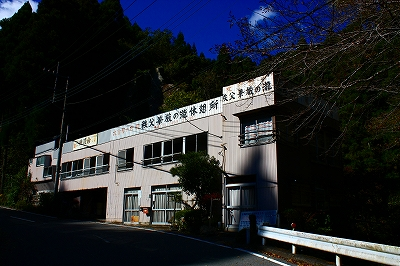
そんなわけで日本百観音オーラスの地にも程近い秩父華厳の滝に到着。
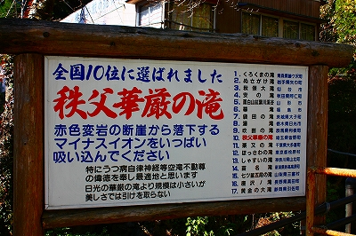
「全国10位に選ばれました」だって。
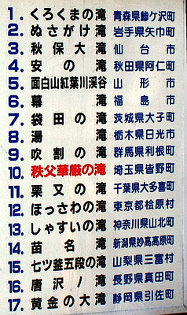
うむ〜。何なんだろう。このランキング。日本の滝百選とも違うし。全国っていう割には東日本ばっかだし。
このサイトをご覧になってる滝マニアの方、真相を教えてくださいまし！
てなわけで滝である。あまり大きくはないが、まあ、立派で美しい滝だった。
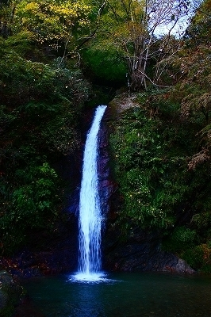
変にナゾのランキングで強調されなければいい滝なのに…
そもそも滝のネーミング自体も腑に落ちない。
この滝の入口にあった町長の銘による石碑にはこの滝が古くから秩父華厳の滝と呼ばれていた、と刻まれている。一方、滝の管理者（そもそも滝の管理者という概念がよく判らないが）の石碑によれば元々下空滝と呼ばれていたものを地元出身の政治家の訪問を受けて秩父華厳の滝に改称したとある。
ま、どっちでもいいですけど、どっちかが違ってるわけですよね。石に刻む以上はちゃんとして欲しいなー。
おお、そうだ、滝を見に来たんじゃないんだってば。俺。
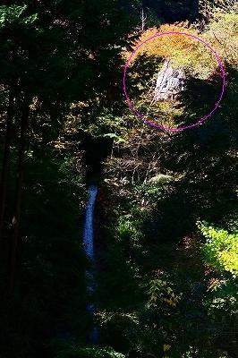
滝の上の部分になにやら素敵なお方がチラホラ見える。
おお、アレが噂の不動サマか！
滝の脇の小道を登り切ると一旦車道に出る。
で、その車道沿いに…
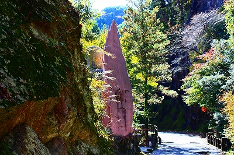
…おお、ありましたぞよ。件の不動サマが！…ってピンクなの〜？
不動サマがあるって知らないで車で通りかかったら「何だこのピンク看板？」てなことなるだろう。
光背の裏側に作者名と建立年が記されていた。
不動サマは滝の方を向いているので道路に対しては背を向けた格好になっている。
恐る恐る回り込んでみると…
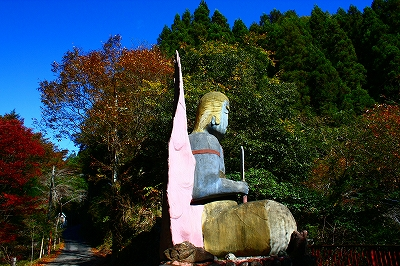
うひゃ！
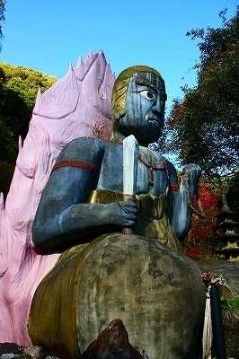
金髪オールバックぅ？
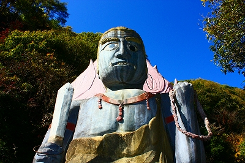
にしてもこのお顔、如何でしょう？
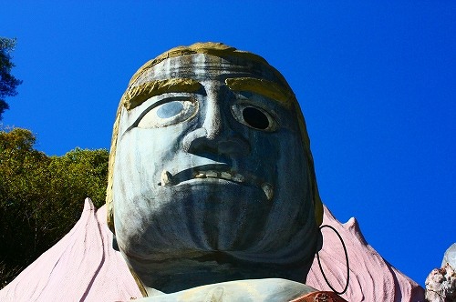
不動サマなので目が段違いだったり牙が左右逆なのは、まあ、間違ってはいないのだが…
基本間違ってないのに不動サマに見えないという点ではある意味素晴らしいコンクリ仏だ、ということになろう。
不動サマの直下に滝が見える。
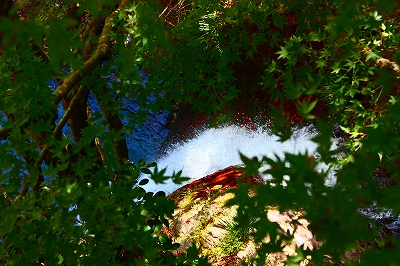
それにつけても不思議なのはこのカラーリングである。
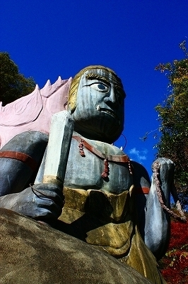
光背のピンクはともかくこの青い身体と赤いアクセサリー…どこかで見たような色使い…
あっ！デビルマンかっ！
まあ、でもまさかアニメ見て色決めた訳じゃないよな…
でも、デビルマンの放映って昭和47年7月〜昭和48年3月、で、この不動サマの建立が昭和48年4月…
これって偶然だろうか？
悪魔の力身につけて悪と戦うデビルマンと悪を平伏すべく戦う不動明王、どっちも変身した姿である点も共通している。
うむむ…
あ、そっか。デビルマンに変身する主人公の名前って不動明だもんね。
ここの不動サマがデビルマンみたいなんじゃなくてデビルマンがそもそも不動明王をモデルにしてたのか。
そう考えると光背がデビルウィングに見えてきちゃうぞ。
スイマセン。一部の世代の人にしか通じない話ばっかりで…
2009.11.
珍寺大道場 HOME